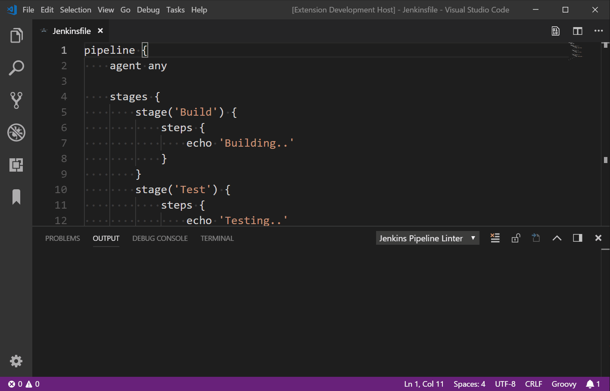

在 VS Code 中校验 Jenkinsfile
在日常工作中，我经常需要创建或修改很多 Jenkinsfile，有时还会发生错误。这是一个非常繁琐的流程——修改 Jenkinsfile，提交、推送，然后等 Jenkins 提醒你少加了一个括号。
Command-line Pipeline Linter(https://jenkins.io/doc/book/pipeline/development/) 可以有效地减少编写 Jenkinsfile 所需要的调试时间，但是它也有一些不方便的地方。你需要使用像 curl 或 ssh 的工具来连接你的 Jenkins，还需要正确地记住验证 Jenkinsfile 的命令。尽管如此，对我来说，这个方案还是不尽如人意。
鉴于每天都会使用 VS Code，于是我开始着手为此研发插件，使得校验 Jenkinsfile 变得更加友好。
Jenkins Pipeline Linter Connector 的作用就是，把当前打开的文件推送到你的 Jenkins，然后在 VS Code 中显示校验结果。

你可以在 VS Code 插件浏览器中或通过下面的地址找到该插件 https://marketplace.visualstudio.com/items?itemName=janjoerke.jenkins-pipeline-linter-connector 。
该插件会在 VS Code 中添加四个配置选项，你必须要使用这些选项来配置用于验证的 Jenkins。
jenkins.pipeline.linter.connector.url是 Jenkins 期望的 POST 请求地址，包含你要校验的 Jenkinsfile 文件。通常为 *http://jenkins.pipeline.linter.connector.user允许指定你的 Jenkins 用户名。jenkins.pipeline.linter.connector.pass允许指定你的 Jenkins 密码。jenkins.pipeline.linter.connector.crumbUrl当你的 Jenkins 启用了 CRSF 时必须指定。通常为 *http://